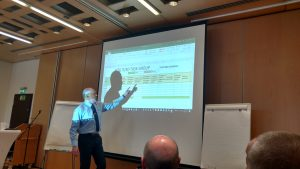
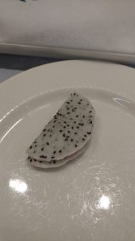
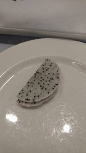
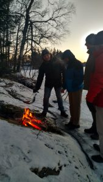
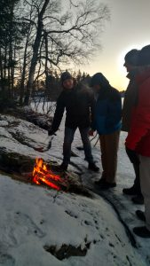

It was never so clear to me how similar and yet dissimilar our nations are. We all have families and beautiful pictures of kids with excellent and yet sometimes unruly behavior. We share similar issues with our militaries in that we struggle to attract the best talent and retain it. We struggle to match individuals to their best positions and ensure that they receive the most effective and efficient training.

Gathering requirements across countries through a note exercise
 Yet, with different languages and different cultural traits when it comes to business, we struggle more to find a common ground for how to discuss things (process) and how to complete a clear task. For countries that value a system that doesn’t involve speaking up in big groups, it is easy to feel unheard. For individuals who are less confident in English, it is easier to observe than participate. And for countries like the US, it is easy to be misperceived as bulldozers because well, quite frankly, anyone at this level of our government is the type of person that fought many battles and won many arguments to get here – so of course we are the types to speak up! And we speak up frequently!
Yet, with different languages and different cultural traits when it comes to business, we struggle more to find a common ground for how to discuss things (process) and how to complete a clear task. For countries that value a system that doesn’t involve speaking up in big groups, it is easy to feel unheard. For individuals who are less confident in English, it is easier to observe than participate. And for countries like the US, it is easy to be misperceived as bulldozers because well, quite frankly, anyone at this level of our government is the type of person that fought many battles and won many arguments to get here – so of course we are the types to speak up! And we speak up frequently!

Given that the US is the country that spends the most money on NATO, well, we *could* control conversations. But the real question is – Is that wise? Just because you *can* monopolize doesn’t mean you *should.* I remember in Spiderman the movie when the uncle says…..”With great power comes great responsibility.” And so I think – it is important to empower others and really listen to what they are saying. Simply because a country is smaller does not at all mean they have less to share, nor does it mean they have less value.

Beautiful….but freezing…lake
“Morning coffee”….who puts guacamole on their crossiants????!!!
My lunch fav….salmon sashimi – I piled it HIGH – EVERYDAY!! 😀


If we want to defend like a world-class force and eradicate terrorism, then we must, WE MUST, learn to work together. Gestalt is a German word that means – the whole is greater than the sum of the parts. I believe it is quite fitting here. We need to work together to ensure safety across our globe – that is an achievement that is good for all our nations.

Lesson learned: Focus on “interoperability” – when technology, training programs, and rules follow the same standards and specifications. This allows for all nations, academies, and industry partners to contribute to development of training programs and optimizes the effectiveness and efficiency of that development.

It’s been a looooooonnnnggggg day….I’m wiped out!!!


 
 



 The best part of my hotel room…..I have a GIANT picture window that overlooks a frozen lake – allowing me to see ice fishermen, skaters, walkers, and what appear to be individuals ice sailing. I’ve never seen that – too cool! Warm apple cider with cinnamon liquor and spices = the perfect complement to the view!
The best part of my hotel room…..I have a GIANT picture window that overlooks a frozen lake – allowing me to see ice fishermen, skaters, walkers, and what appear to be individuals ice sailing. I’ve never seen that – too cool! Warm apple cider with cinnamon liquor and spices = the perfect complement to the view! 

 Where do we go from here? What is the future going to look like? Twitter has brought us so much information! Even IN government….we are learning what’s happening from twitter. What is truth? What is fiction? What do the executive orders actually say? Has anyone read them directly? Or is everyone just speculating and extrapolating? WHIRLWIND!
Where do we go from here? What is the future going to look like? Twitter has brought us so much information! Even IN government….we are learning what’s happening from twitter. What is truth? What is fiction? What do the executive orders actually say? Has anyone read them directly? Or is everyone just speculating and extrapolating? WHIRLWIND!
 We left early – about 2 hours before it was supposed to start but the pictures tell everything – it was PACKED. We ran home to change into business attire….we were going to attend the Women in Politics meeting to discuss how to promote women. This group was focused on support and solutions whereas the march was about a statement. Given our positions in government, we felt that a solution-focused meeting would be a good way for us to learn more. And yes, we have to pay for this too!! HAHA What did we see?
We left early – about 2 hours before it was supposed to start but the pictures tell everything – it was PACKED. We ran home to change into business attire….we were going to attend the Women in Politics meeting to discuss how to promote women. This group was focused on support and solutions whereas the march was about a statement. Given our positions in government, we felt that a solution-focused meeting would be a good way for us to learn more. And yes, we have to pay for this too!! HAHA What did we see?